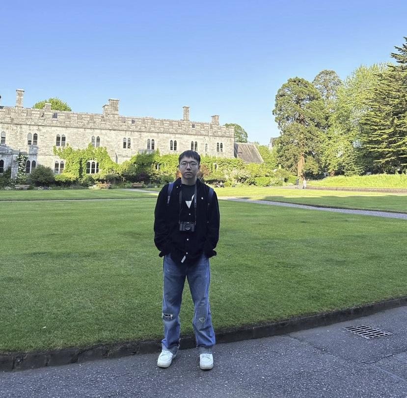

|  |
About meMy name is Kaining Zhao. I'm from Beijing, China, I think I'm a cheerful person who likes to hang out and have dinner with friends. In terms of study, I am very interested in statistics, and computers can bring me great help in learning statistics and allow me to use statistical knowledge very well. So I came to this project in data science. Nice to meet you all! |
Education- 2019 - 2021 Undergraduate studies in Statistics at Beijing Technology and Business University in Beijing - 2021 - 2023 Undergraduate degree in Actuarial Science at University College Cork, Ireland - 2023 - now Master's degree in data science from Georgetown University |
Academic InterestsI pursued my undergraduate degree in statistics and continued my academic journey by specializing in data science at the graduate level. This academic background has provided me with the opportunity to delve deep into the world of data and statistical methods while sparking my interest in various academic areas. Here are the key aspects of academia that I am passionate about: 1. Data Analysis and Visualization: I am deeply intrigued by the art of effectively analyzing and visualizing large datasets. I believe that data analysis and visualization are not only essential in extracting meaningful insights but also in communicating complex information to a wide audience. 2. Machine Learning and Predictive Analytics: The ever-evolving field of machine learning and predictive analytics fascinates me. I am particularly interested in exploring how these techniques can be applied to real-world problems, such as predictive modeling, recommendation systems, and natural language processing. 3. Statistical Modeling and Inference: My undergraduate studies in statistics have instilled in me a strong foundation in statistical modeling and inference. I am keen to further explore advanced statistical techniques and their applications in solving complex problems. 4. Interdisciplinary Research: I am drawn to interdisciplinary research where I can apply data-driven approaches to fields beyond data science itself. Whether it's healthcare, finance, or environmental science, I am eager to collaborate and contribute to solving multifaceted challenges. 5. Ethical Data Science: As data ethics gain importance, I am passionate about incorporating ethical considerations into data science practices. I believe in using data responsibly and ensuring that the impact of data-driven decisions is positive and fair. In summary, my academic journey has shaped my interests in data analysis, machine learning, statistical modeling, interdisciplinary collaboration, and ethical data science. I am enthusiastic about exploring these areas further and making meaningful contributions to the ever-expanding field of data science. |